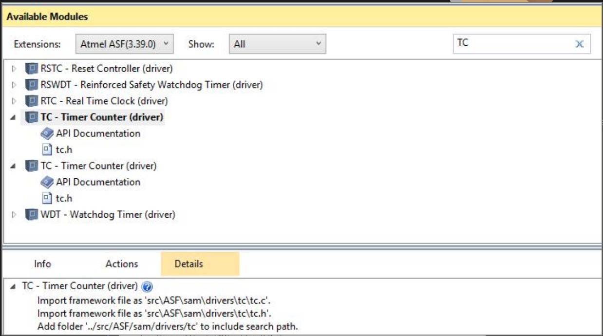

TC - RTC - RTT¶
Warning
Esse lab já possui entrega com nota!
Repositório
Criar repositório para entregar o lab e preencher o formulário a seguir:
| Pasta |
|---|
Labs/TC-RTC-RTT/ |
-
Parte 1 (C):
- Entender os exemplos (TC/RTT/RTC)
- Incorporar todos os exemplos em um único projeto
- Pisca pisca
-
Parte 2
- C+ : fazer outro LED piscar com TC
- B : Exibir a hora atual no lcd
- A : Usar IRQ do segundos do RTC
Periféricos / Exemplos¶
SAME70-examples
Antes de continuar atualize o repositório de exemplos, teve alteração.
Nesse lab iremos trabalhar com três periféricos que lidam com 'tempo', o TimerCounter - TC (temos no total e 4x3=12 no uC) o Real-time Timer - RTT (temos um) e o Real-time Clock RTC (temos um). Cada um possui sua especifidade:
- TC: Faz várias coisas, nesse lab iremos usar para gerar interrupções maiores que 2Hz (ele não consegue gerar tempos muito lentos!)
- RTT: É um contador que consegue gerar praticamente qualquer frequência (vamos usar para gerar frequências lentas)
- RTC: É um como um calendário com relógio, ele conta anos, meses, dias, horas, minutos e segundos.
Cada periférico está em um exemplo diferente:
| Periférico exemplos |
|---|
Perifericos/TC-IRQ |
Perifericos/RTT-IRQ |
Perifericos/RTC-IRQ |
Cada exemplo possui o seu próprio README que da uma visão geral dos periféricos. Note que todos esses exemplos estão operando por interrupção! Onde cada periférico possui o seu handler para resolver a interrupção.
Tarefa
Para cada exemplo (TC,RTT e RTC): 1. Leia o README 1. Programe a placa (e veja os LEDs piscando!) 1. Entenda o código
Lab¶
Nesse lab iremos utilizar a placa OLED1, para isso, você deve copiar o código exemplo: SAME70-examples/Screens/OLED-Xplained-Pro-SPI/ para a pasta da entrega do seu repositório Labs/TC-RTC-RTT.
(C) TC, RTT e RTC¶
Com o código do OLED1 copiado (eu dei uma simplificada nele nessa nova versão), vocês devem configurar os botões e os LEDs da placa OLED, e então utilizando um TC fazer com que o LED0 pisque a uma frequencia de 6 HZ; usando o RTT fazer com que o LED1 pisque a uma frequência de 0.5Hz e com que o LED da placa pisque por 5x após 20s do sistema ter inicializado, fazer o uC entrar em sleepmode sempre que não tiver nada para fazer.
Tarefa
No código do OLED1:
- Configurar os pinos e os LEDs da placa OLED1
- Fazer com que o
LED0pisque a 4HZ usando o TC - Fazer com que o
LED1pisque a cada 4s usando o RTT - Fazer com o que o
LED PLACApisque por 5 vezes após 20 segundos (USAR RTC) - Entrar em sleepmode
Tip
Abrir o código atual e o exemplo e ir trazendo as funções e defines que precisa usar, não esqueça de chamar as funções no main
Tip
Você vai precisar incluir no ASF WIZARD os drivers do TCC e RTT
Quando você fizer a busca vai reparar que tem dois drivers de TC,
para isso você deve clicar em Details e ver o TC que adiciona só
dois arquivos tc.h e tc.c como na figura a seguir

Info
Aqui já é C!
(C+) Piscar mais um LED¶
Tarefa
Faça o LED2 da placa OLED piscar a 5Hz usando um novo TC
(B) Exibindo HH:MM:SS¶
Tarefa
Exiba a hora no formato (HH:MM:SS) no display OLED
Tip
O RTC tem uma função que você consegue buscar no periférico a hora atual: rtc_get_time()
Tip
Para executar isso você deverá ser capaz de saber quando que o segundo mudou, duas são as opções:
- Usar um novo TC configurado com 1hz
- Pedir para o RTC gerar uma IRQ a cada mudança de segunda
A segunda opção você faz modificando a função de init_rtc:
RTC_init(RTC, ID_RTC, rtc_initial, RTC_IER_ALREN | RTC_IER_SECEN);
E agora você consegue dentro do RTC_handler saber quando você entrou
na IRQ pelo segundo:
/* Verifica por qual motivo entrou * na interrupcao, se foi por segundo * ou Alarm */ if ((ul_status & RTC_SR_SEC) == RTC_SR_SEC) { // // Entrou por segundo! // rtc_clear_status(RTC, RTC_SCCR_SECCLR); }
Warning
Você nunca deve atualizar display dentro de Handlers! Sempre no main
A¶
Usar a IRQ do RTC por segundo para atualizar o display